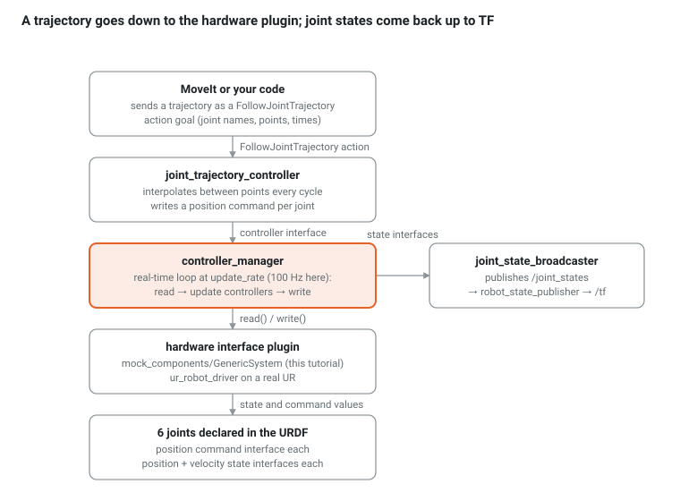

Ch 5 — ros2_control + mock hardware: making the robot move (week 3)
Goal: replace the slider GUI with the real control stack. By the end, a FollowJointTrajectory goal moves the UR10e in RViz through the same controller MoveIt will use, with a mock hardware plugin instead of a UR driver.
The stack

Only the plugin changes between this tutorial and a real robot. Everything above it is identical, which is why a mocked cell is a faithful rehearsal.
10-minute proof with the UR driver's own mock mode
ros2 launch ur_robot_driver ur_control.launch.py ur_type:=ur10e robot_ip:=0.0.0.0 \
use_mock_hardware:=true initial_joint_controller:=joint_trajectory_controller launch_rviz:=true
# second terminal: the driver's demo trajectory
ros2 launch ur_robot_driver test_joint_trajectory_controller.launch.py
ros2 control list_controllers
ros2 control list_hardware_interfaces
robot_ip is mandatory but unused in mock mode; the scaled controller needs the real robot, so the plain joint_trajectory_controller is selected. Watch the arm move, then stop everything: we now build the same thing for our cell by hand.
Declare the hardware in Xacro: urdf/cell_control.urdf.xacro
<?xml version="1.0"?>
<robot name="cell" xmlns:xacro="http://wiki.ros.org/xacro">
<xacro:include filename="$(find cell_description)/urdf/cell.urdf.xacro"/>
<xacro:macro name="ctrl_joint" params="name init">
<joint name="${name}">
<command_interface name="position"/>
<state_interface name="position"><param name="initial_value">${init}</param></state_interface>
<state_interface name="velocity"/>
</joint>
</xacro:macro>
<ros2_control name="ur10e_system" type="system">
<hardware>
<plugin>mock_components/GenericSystem</plugin> <!-- state = command, instantly -->
</hardware>
<!-- a good "home": elbow bent, tool pointing down, in front of the robot -->
<xacro:ctrl_joint name="shoulder_pan_joint" init="0.0"/>
<xacro:ctrl_joint name="shoulder_lift_joint" init="-1.57"/>
<xacro:ctrl_joint name="elbow_joint" init="1.57"/>
<xacro:ctrl_joint name="wrist_1_joint" init="-1.57"/>
<xacro:ctrl_joint name="wrist_2_joint" init="-1.57"/>
<xacro:ctrl_joint name="wrist_3_joint" init="0.0"/>
</ros2_control>
</robot>
Configure the controllers: config/ros2_controllers.yaml
controller_manager:
ros__parameters:
update_rate: 100
joint_state_broadcaster:
type: joint_state_broadcaster/JointStateBroadcaster
arm_controller:
type: joint_trajectory_controller/JointTrajectoryController
arm_controller:
ros__parameters:
joints: [shoulder_pan_joint, shoulder_lift_joint, elbow_joint, wrist_1_joint, wrist_2_joint, wrist_3_joint]
command_interfaces: [position]
state_interfaces: [position, velocity]
state_publish_rate: 100.0
action_monitor_rate: 20.0
allow_partial_joints_goal: false
constraints:
stopped_velocity_tolerance: 0.01
goal_time: 0.0 # 0 = no deadline; a real cell sets this
Launch: launch/control.launch.py
from launch import LaunchDescription
from launch.substitutions import Command, FindExecutable, PathJoinSubstitution
from launch_ros.actions import Node
from launch_ros.parameter_descriptions import ParameterValue
from launch_ros.substitutions import FindPackageShare
def generate_launch_description():
pkg = FindPackageShare('cell_description')
xacro_file = PathJoinSubstitution([pkg, 'urdf', 'cell_control.urdf.xacro'])
robot_description = ParameterValue(Command([FindExecutable(name='xacro'), ' ', xacro_file]), value_type=str)
controllers = PathJoinSubstitution([pkg, 'config', 'ros2_controllers.yaml'])
return LaunchDescription([
Node(package='robot_state_publisher', executable='robot_state_publisher',
parameters=[{'robot_description': robot_description}]),
# ros2_control_node reads the URDF from the /robot_description topic in Jazzy
Node(package='controller_manager', executable='ros2_control_node', parameters=[controllers], output='screen',
remappings=[('~/robot_description', '/robot_description')]),
Node(package='controller_manager', executable='spawner', arguments=['joint_state_broadcaster']),
Node(package='controller_manager', executable='spawner', arguments=['arm_controller']),
Node(package='rviz2', executable='rviz2', arguments=['-d', PathJoinSubstitution([pkg, 'rviz', 'cell.rviz'])]),
])
Add config to the install(DIRECTORY …) line and <exec_depend> on controller_manager, joint_state_broadcaster, joint_trajectory_controller, ros2_control.
Run and command a trajectory
colcon build --symlink-install && source install/setup.bash
ros2 launch cell_description control.launch.py
ros2 control list_controllers # both should be "active"
ros2 topic hz /joint_states # ~100 Hz
ros2 action send_goal /arm_controller/follow_joint_trajectory control_msgs/action/FollowJointTrajectory "{
trajectory: {
joint_names: [shoulder_pan_joint, shoulder_lift_joint, elbow_joint, wrist_1_joint, wrist_2_joint, wrist_3_joint],
points: [
{positions: [0.8, -1.3, 1.4, -1.67, -1.57, 0.0], time_from_start: {sec: 3}},
{positions: [0.0, -1.57, 1.57, -1.57, -1.57, 0.0], time_from_start: {sec: 6}}
]}}" --feedback
The arm sweeps to the pallet side and back over 6 s. The controller interpolates between the two points; the mock plugin copies each command into the state; the broadcaster publishes it; RViz draws it.
Checkpoint
- [ ]
ros2 control list_hardware_interfacesshows 6 command interfaces (claimed) and 12 state interfaces (available) - [ ] The trajectory above moves the robot; a goal with a joint beyond its URDF limit is rejected (try
shoulder_pan_joint: 7.0) - [ ] You wrote
ros2_basics/src/traj_client.cpp, anrclcpp_action::Client<control_msgs::action::FollowJointTrajectory>that sends the same two points and prints the result'serror_code - [ ] You changed
update_rateto 500 and observed/joint_statesrate change
Questions
- Why does
arm_controllerneedstate_interfaces: [position, velocity]when the mock only tracks position? - What would a Gazebo plugin change in the stack drawing above?
Answers: Appendix
Go deeper
- Writing a hardware component: what the mock plugin hides. A hardware plugin is a C++ class with
on_init,read()andwrite(); the controller manager calls read and write every cycle. Demo example 7 is a six-axis arm with its own plugin and controller, the closest open example to a vendor driver. - UR custom workcell tutorial, driver part: the vendor adds
ur_ros2_controlto a custom description and startsur_control.launch.pywithdescription_launchfile, in mock or real mode. This is the path from this chapter to a real UR in Ch 18. - Exercise for later: write a
cell_hardwareplugin that forwards joint commands toworld_modelover a socket instead of the mock. Nothing above the plugin changes, which is the point of the drawing at the top of this chapter.